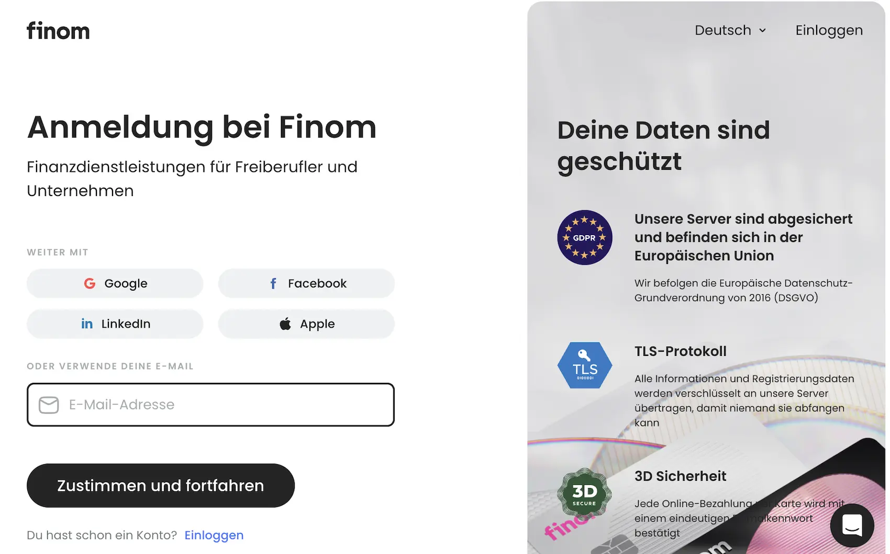

Das Wichtigste: Finom
- 4 Tarife: Solo (0 €), Basic, Smart und Pro; bezahlte Tarife starten mit kostenloser Testphase.
- Kostenlos für Einzelunternehmer: Das Solo-Konto richtet sich an Einzelunternehmer und startet ohne monatliche Grundgebühr.
- Preisniveau: Basic ab 8,99 €, Smart ab 23,99 € und Pro ab 119 € je nach gewähltem Zahlungsintervall.
- SEPA-Modell: volumenbasiert von 2.500 € im Solo- bis 100.000 € Umsatz im Pro-Tarif.
- Bargeld: reguläre Einzahlungen fehlen, und auch Abhebungen sind je nach Tarif begrenzt.
- Stärken: starke Rechnungsfunktionen, viele Integrationen und Cashback je nach Tarifmodell.
- Einordnung: kein klassisches Kreditinstitut, sondern ein Safeguarding-/Partnermodell.
Für wen ist Finom geeignet — und für wen nicht?
Am besten passt Finom zu digital arbeitenden Freelancern, Selbstständigen, Gründern und Unternehmen, die Banking, Rechnungsstellung und Buchhaltungsfunktionen in einer Plattform bündeln möchten. Besonders relevant sind das aktuelle Cashback-Modell, die integrierte Rechnungslogik und die vielen Softwareanbindungen. Weniger passend ist Finom für stark bargeldnahe Abläufe oder für Unternehmen, die lieber ein klassisches Bankmodell mit Filial- und Bareinzahlungslogik suchen.
- Freelancer — Solo ist der kostenlose Einstiegstarif
- Digitale Teams — Karten-, Rollen- und Volumenfunktionen wachsen mit
- Buchhaltungsnahe Nutzer — DATEV und viele Integrationen sind Teil des Modells
- Nutzer mit Fokus auf Rechnungsstellung — Invoicing ist zentraler Teil der Plattform
- Bargeldintensive Betriebe — keine Bareinzahlungen
- Großes Zahlungsvolumen im kleinen Tarif — volumenabhängige Kosten
- Klassischer Kredit- und Filialbankbedarf — kein Filialbank-Modell
- Wunsch nach einfachen Preismodellen — Staffelungen erklärungsbedürftig
Finom Geschäftskonto: Rechtsformen
Im offiziellen deutschen Hilfezentrum nennt Finom ausdrücklich Freelancer, Unternehmen in bestimmten Rechtsformen sowie Unternehmen in Gründung als unterstützte Fälle.
| Rechtsform | Status | Unterlagen / Hinweis |
|---|---|---|
| Freelancer, Selbständige, Einzelunternehmer | Möglich |
|
| AG, eK, eG, GmbH, GbR, KG, KGaA, OHG, PartG, UG, GmbH & Co. KG | Möglich |
|
| GmbH i.G., UG i.G. | Möglich |
|
Finom Geschäftskonto: Kosten & Konditionen
Die folgende Übersicht zeigt die wichtigsten aktuell auf der deutschen Finom-Preisseite sichtbaren Punkte. Abgeglichen wurden Preisstruktur, Zahlungsvolumen, Kartenlogik, Cashback und zentrale Plattformfunktionen mit Stand 6. Juni 2026.
| Leistung | SOLO | BASIC | SMART | PRO |
|---|---|---|---|---|
| Für wen geeignet? | Freelancer mit schlankem Bedarf | Einzelunternehmer oder kleine Teams | Kleine bis mittlere Unternehmen | Größere Volumen und Team-Setups |
| Grundgebühr mtl. | 0 € für Freelancer dauerhaft |
8,99 € 10,99 € monatlich |
23,99 € 27,99 € monatlich |
119 € 149 € monatlich |
| SEPA-Monatslimit (kostenlos) | 2.500 € danach 0,30 % |
25.000 € danach 0,03 % |
50.000 € danach 0,025 % |
100.000 € danach 0,025 % |
| Nutzeranzahl | 1 | 2 | Mehr Teamfunktionen | Für größere Teams |
| Virtuelle Karten | 1 | 3 | 10 | Mehr Karten und Teamoptionen |
| Physische Karten | 0 kostenlos monatliche Wartung 3 € |
1 pro Nutzer:in | 3 pro Nutzer:in | 3 pro Nutzer:in |
| Cashback | 0 % | 1 % | 3 % | Bis zu 0,5 % |
| Unterkonten (Wallets) | 1 | 2 | 3 | 10 |
| Bargeldabhebung frei (mtl.) | 500 € danach gestaffelte Gebühren |
2.000 € danach gestaffelte Gebühren |
5.000 € danach gestaffelte Gebühren |
5.000 € je nach Kartenmodell |
| Rechnungsstellung | Inklusive | Erweitert mit E-Rechnungsfunktionen |
Erweitert | Erweitert |
| DATEV & Buchhaltungsintegrationen | 30+ Integrationen inklusive DATEV | 30+ Integrationen inklusive DATEV | 30+ Integrationen inklusive DATEV | 30+ Integrationen inklusive DATEV |
| SWIFT-Überweisungen (ausgehend) | 5 € + 1 % | 5 € + 0,5 % | 5 € + 0,4 % | 5 € + 0,2 % |
| Inaktive-Karten-Gebühr | Ja bei virtuellen Karten relevant |
Ja | Ja | Nein |
| Probezeit | Nicht ausgewiesen | 30 Tage kostenlos | 30 Tage kostenlos | 30 Tage kostenlos |
| Konto eröffnen | Solo → | Basic → | Smart → | Pro → |
Finom Geschäftskonto: Vor- und Nachteile
- Solo kostenlos für Freelancer als Einstieg
- Bis zu 3 % Cashback je nach Tarif
- Rechnungsstellung direkt in der Plattform
- 30+ Buchhaltungsintegrationen inklusive DATEV
- Karten, Wallets und Multibanking in einer Oberfläche
- Keine reguläre Bargeldeinzahlung
- Tariflogik nach Zahlungsvolumen ist erklärungsbedürftig
- Zusatzgebühren bei Karten und Ausland genau prüfen
- SWIFT-Überweisungen kosten extra
- Kein klassisches Filialbank-Modell
Funktionen & Features im Detail
Der Kern von Finom ist die Plattformlogik aus Zahlungsfunktionen, Rechnungsstellung, Kartenverwaltung und Buchhaltung. Diese Bereiche greifen hier stärker ineinander als bei vielen klassischen Geschäftskonten.
Cashback — derzeit bis zu 3 %
Cashback bleibt eines der sichtbarsten Finom-Merkmale. Es variiert je nach Tarif bis zu 3 %. Basic und Smart haben monatliche Cashback-Grenzen, bei höheren Tarifen nennt Finom andere Logiken. Deshalb sollte man Cashback immer zusammen mit Tarifstufe und Limit lesen.
Vollständige Rechnungsstellung in allen Tarifen
Die Rechnungsstellung ist bei Finom ein Kernbestandteil der Plattform. Schon Solo enthält Invoicing-Funktionen; in den bezahlten Tarifen kommen weitere Formate und mehr Buchhaltungsnähe hinzu. Für Nutzer mit Fokus auf Rechnungsworkflow ist das ein echter Pluspunkt gegenüber reinen Bankkonten.
Multibanking & Wallets
Wallets und Unterkonten sind bei Finom vor allem für Steuerrücklagen, Projekte oder getrennte Zahlungsflüsse praktisch. Die Zahl der Wallets steigt je nach Tarif; zusätzlich lassen sich andere Konten einbinden.
Automatischer Belegabgleich & Ausgabenkategorisierung
Belege, Transaktionen und Rechnungen sind bei Finom enger verzahnt als bei vielen reinen Geschäftskonten. Das reduziert manuelle Nacharbeit, ersetzt aber nicht jede steuerliche Detailprüfung; die konkrete Prozessqualität hängt auch vom eigenen Setup mit DATEV oder anderer Software ab.
Finom Geschäftskonto: Karten
Finom setzt auf Visa-Debitkarten, physisch und virtuell. Die Karten sind im Cashback-Programm registriert, das je nach Tarif unterschiedlich ausfällt. Alle Karten unterstützen 3D Secure, Apple Pay und Google Pay.
| Karte | Typ | Kosten | Besonderheiten |
|---|---|---|---|
| Physische Finom Karte | Visa Debit | Je nach Tarif Solo ohne kostenlose physische Karte, Basic 1, Smart 3 pro Nutzer:in |
Debitkarte mit tarifabhängigen Wartungs- und Zusatzkosten |
| Virtuelle Finom Karte | Visa Debit | Je nach Tarif Solo 1, Basic 3, Smart 10 |
Für Online-Zahlungen und digitale Workflows; kleine Tarife mit zusätzlichen Kartenregeln |
Finom Geschäftskonto: Bargeld & Abhebungen
Für digital arbeitende Selbstständige ist Finom bei Kartenzahlungen und begrenzten Automatenabhebungen brauchbar. Für regelmäßige Bareinzahlungen ist das Konto dagegen nicht ausgelegt.
| Leistung | SOLO | BASIC | SMART / HÖHER |
|---|---|---|---|
| Bargeldeinzahlung | Keine reguläre Bareinzahlung | Keine reguläre Bareinzahlung | Keine reguläre Bareinzahlung |
| Max. Abhebevolumen / Monat | 500 € | 2.000 € | 5.000 € |
| Kostenloser Bereich | kein kostenloser Bereich | bis 500 € | bis 2.000 € |
| Gebührenstaffel danach | 1 % bis 500 € danach 3 % bis 2.000 €, 5 % bis 5.000 €, 8 % ab 5.000 € |
1 % bis 2.000 € danach 5 % bis 5.000 €, 8 % ab 5.000 € |
3 % bis 5.000 € danach 5 % bis 10.000 €, 8 % ab 10.000 € |
| Einordnung | für gelegentliche Abhebungen | für gelegentliche Abhebungen | brauchbar, aber nicht bargeldfokussiert |
Buchhaltung, DATEV & Softwareintegrationen
Buchhaltung und Softwareintegrationen sind ein zentraler Teil des Finom-Produkts. Finom bewirbt mehr als 30 Buchhaltungsintegrationen, nennt DATEV ausdrücklich und führt auf der Preisvergleichsseite außerdem DATEV Belegbilderservice auf.
Auf Preis- und Produktseiten werden unter anderem folgende Integrationsrichtungen hervorgehoben:
- DATEV: Finom nennt DATEV ausdrücklich; auf der Preisvergleichsseite erscheint zusätzlich DATEV Belegbilderservice.
- sevDesk, Lexware Office, FastBill und weitere Tools: Finom bewirbt insgesamt mehr als 30 Integrationen.
- E-Rechnungsfunktionen: In den bezahlten Tarifen deutlich stärker ausgebaut.
- Automatischer Belegabgleich: Rechnungen, Belege und Zahlungen lassen sich enger verbinden.
Einlagenschutz & Regulierung bei Finom
Finom arbeitet nicht mit einem klassischen Bankkonto-Modell, sondern mit einer E-Geld- bzw. Zahlungskonto-Struktur. Konten werden heute über Finom Payments B.V. unter Aufsicht der niederländischen Zentralbank (DNB) geführt; Kundengelder werden dabei getrennt als safeguarded funds verwahrt. Bei älteren Solaris-basierten Konten kann die Schutzlogik abweichen.
| Status | E-Geld- / Zahlungskonto |
| Aufsicht | Finom Payments B.V. unter Aufsicht der niederländischen Zentralbank (DNB) |
| Schutz von Kundengeldern | Getrennte Verwahrung als safeguarded funds |
| Zusätzlicher Hinweis | Ältere Konten können noch im Solaris-Modell geführt werden; dadurch kann die Schutzlogik abweichen |
Wie eröffne ich ein Finom Geschäftskonto?
Die Kontoeröffnung läuft digital. Der genaue Ablauf hängt von Rechtsform, Dokumentenlage und Prüfungsbedarf ab. Für Freelancer ist der Einstieg typischerweise schlanker als für Kapital- oder Personengesellschaften.
- Tarif wählen & Account anlegen: Auf der Finom-Seite den passenden Tarif und die passende Zielgruppe wählen.
- Unternehmens- und Personendaten eingeben: Rechtsform, Unternehmensdaten und wirtschaftlich Berechtigte werden abgefragt.
- Dokumente hochladen: Je nach Rechtsform fordert Finom Ausweis- und Unternehmensunterlagen an.
- Identität und Unternehmensdaten bestätigen: Die genaue Prüfstrecke kann je nach Fall variieren.
- Freischaltung abwarten: Nach erfolgreicher Prüfung wird das Konto nutzbar; Karten und weitere Funktionen folgen je nach Setup.

Finom Geschäftskonto Fazit 2026
Kurzfazit: stark bei Karten, Rechnungen und Buchhaltung in einer Oberfläche, schwächer bei Bargeld, Filialnähe und ganz einfacher Preislogik.
Besonders lohnt sich das Finom Geschäftskonto 2026 für Freelancer, Selbstständige und digital organisierte Unternehmen, die Karten, Rechnungen, Wallets und Buchhaltung möglichst eng in einer Plattform bündeln möchten. Die Preisstruktur bietet viel Flexibilität, verlangt bei Volumenstaffeln, Kartenregeln und Auslandsgebühren aber etwas mehr Aufmerksamkeit als einfachere Konto-Modelle.
Nicht das Richtige? Diese Alternativen könnten passen
Alle drei Anbieter haben wir ebenfalls getestet — hier die wichtigsten Unterschiede auf einen Blick.

Naheliegend für Selbstständige, die Banking, Rechnungsstellung und Teile der Buchhaltung enger in einer Oberfläche bündeln möchten.
✓ klar softwarezentrierter als Finom
× weniger stark bei Karten- und Cashback-Logik

Gut für Teams und Mehrnutzer-Setups, die Rollen, Kartensteuerung, Freigaben und Unterkonten stärker priorisieren als Finoms Cashback-Modell.
✓ klarer Software-Fokus bei Karten und Rollen
× weniger attraktiv für Nutzer mit Cashback-Fokus
Spannend für Unternehmen, die Bargeldservices, Postbank-/Deutsche-Bank-Infrastruktur und klassischere Banklogik stärker gewichten als Plattformfunktionen.
✓ klassischere Bankinfrastruktur als Finom
× weniger stark bei Karten- und Cashback-Logik
Alle Konten im großen Vergleich: Geschäftskonto-Vergleich 2026 →